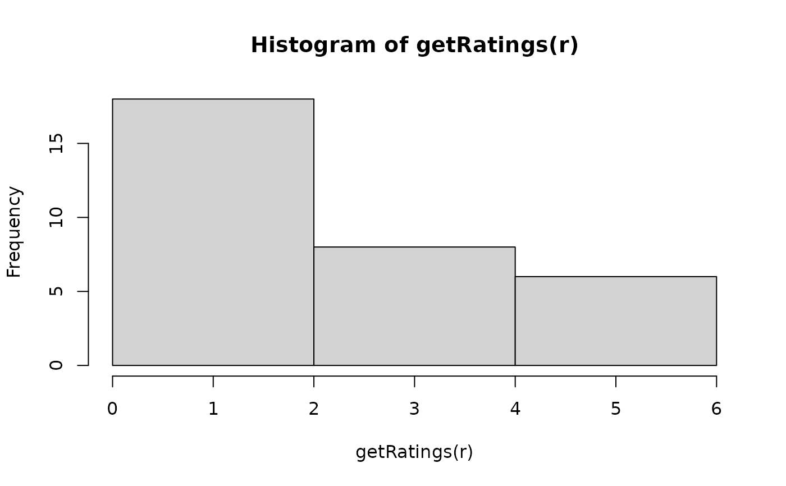
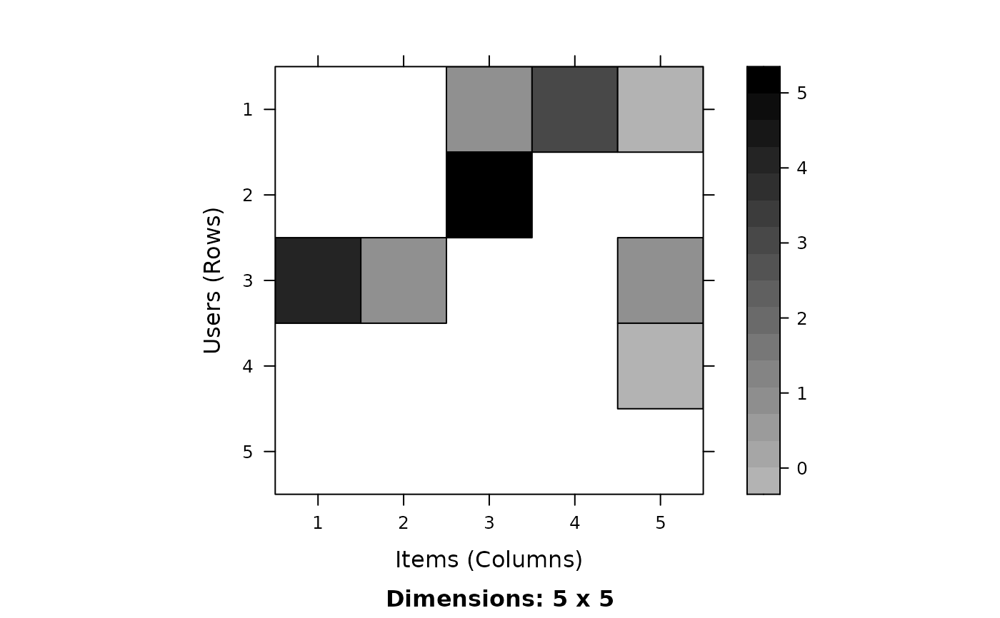

Class "realRatingMatrix": Real-valued Rating Matrix
realRatingMatrix-class.RdA matrix containing ratings (typically 1-5 stars, etc.).
Objects from the Class
Objects can be created by calls of the form new("realRatingMatrix", data = m), where m is sparse matrix of class
dgCMatrix in package Matrix
or by coercion from a regular matrix, a data.frame containing user/item/rating triplets as rows, or
a sparse matrix in triplet form (dgTMatrix in package Matrix).
Slots
data:Object of class
"dgCMatrix", a sparse matrix defined in package Matrix. Note that this matrix drops NAs instead of zeroes. Operations on"dgCMatrix"potentially will delete zeroes.normalize:NULLor a list with normalizaton factors.
Extends
Class "ratingMatrix", directly.
Methods
- coerce
signature(from = "matrix", to = "realRatingMatrix"): Note that unknown ratings have to be encoded in the matrix as NA and not as 0 (which would mean an actual rating of 0).- coerce
signature(from = "realRatingMatrix", to = "matrix")- coerce
signature(from = "data.frame", to = "realRatingMatrix"): coercion from a data.frame with three columns. Col 1 contains user ids, col 2 contains item ids and col 3 contains ratings.- coerce
signature(from = "realRatingMatrix", to = "data.frame"): produces user/item/rating triplets.- coerce
signature(from = "realRatingMatrix", to = "dgTMatrix")- coerce
signature(from = "dgTMatrix", to = "realRatingMatrix")- coerce
signature(from = "realRatingMatrix", to = "dgCMatrix")- coerce
signature(from = "dgCMatrix", to = "realRatingMatrix")- coerce
signature(from = "realRatingMatrix", to = "ngCMatrix")- binarize
signature(x = "realRatingMatrix"): create a"binaryRatingMatrix"by setting all ratings larger or equal to the argumentminRatingas 1 and all others to 0.- getTopNLists
signature(x = "realRatingMatrix"): create top-N lists from the ratings in x. Arguments aren(defaults to 10),randomize(default isNULL) andminRating(default isNA). Items with a rating belowminRatingwill not be part of the top-N list.randomizecan be used to get diversity in the predictions by randomly selecting items with a bias to higher rated items. The bias is introduced by choosing the items with a probability proportional to the rating \((r-min(r)+1)^{randomize}\). The larger the value the more likely it is to get very highly rated items and a negative value forrandomizewill select low-rated items.- removeKnownRatings
signature(x = "realRatingMatrix"): removes all ratings inxfor which ratings are available in the realRatingMatrix (of same dimensions asx) passed as the argumentknown.- rowSds
signature(x = "realRatingMatrix"): calculate the standard deviation of ratings for rows (users).- colSds
signature(x = "realRatingMatrix"): calculate the standard deviation of ratings for columns (items).
See also
See ratingMatrix inherited methods,
binaryRatingMatrix,
topNList,
getList and getData.frame.
Also see dgCMatrix-class,
dgTMatrix-class and
ngCMatrix-class
in Matrix.
Examples
## create a matrix with ratings
m <- matrix(sample(c(NA,0:5),100, replace=TRUE, prob=c(.7,rep(.3/6,6))),
nrow=10, ncol=10, dimnames = list(
user=paste('u', 1:10, sep=''),
item=paste('i', 1:10, sep='')
))
m
#> item
#> user i1 i2 i3 i4 i5 i6 i7 i8 i9 i10
#> u1 NA NA 1 3 0 NA 1 NA 2 NA
#> u2 NA NA 5 NA NA NA NA 5 NA NA
#> u3 4 1 NA NA 1 1 NA 1 NA NA
#> u4 NA NA NA NA 0 5 NA NA NA 2
#> u5 NA NA NA NA NA NA NA 2 NA NA
#> u6 0 1 NA NA NA NA NA 4 5 NA
#> u7 4 NA NA 1 NA NA 5 4 NA NA
#> u8 NA NA 0 4 NA 5 NA NA 4 NA
#> u9 0 NA NA 1 NA NA 2 NA NA NA
#> u10 NA NA NA NA 3 NA NA NA NA NA
## coerce into a realRatingMAtrix
r <- as(m, "realRatingMatrix")
r
#> 10 x 10 rating matrix of class ‘realRatingMatrix’ with 32 ratings.
## get some information
dimnames(r)
#> $user
#> [1] "u1" "u2" "u3" "u4" "u5" "u6" "u7" "u8" "u9" "u10"
#>
#> $item
#> [1] "i1" "i2" "i3" "i4" "i5" "i6" "i7" "i8" "i9" "i10"
#>
rowCounts(r) ## number of ratings per user
#> u1 u2 u3 u4 u5 u6 u7 u8 u9 u10
#> 5 2 5 3 1 4 4 4 3 1
colCounts(r) ## number of ratings per item
#> i1 i2 i3 i4 i5 i6 i7 i8 i9 i10
#> 4 2 3 4 4 3 3 5 3 1
colMeans(r) ## average item rating
#> i1 i2 i3 i4 i5 i6 i7 i8
#> 2.000000 1.000000 2.000000 2.250000 1.000000 3.666667 2.666667 3.200000
#> i9 i10
#> 3.666667 2.000000
nratings(r) ## total number of ratings
#> [1] 32
hasRating(r) ## user-item combinations with ratings
#> 10 x 10 sparse Matrix of class "ngCMatrix"
#> [[ suppressing 10 column names ‘i1’, ‘i2’, ‘i3’ ... ]]
#> item
#> user
#> u1 . . | | | . | . | .
#> u2 . . | . . . . | . .
#> u3 | | . . | | . | . .
#> u4 . . . . | | . . . |
#> u5 . . . . . . . | . .
#> u6 | | . . . . . | | .
#> u7 | . . | . . | | . .
#> u8 . . | | . | . . | .
#> u9 | . . | . . | . . .
#> u10 . . . . | . . . . .
## histogram of ratings
hist(getRatings(r), breaks="FD")

## inspect a subset
image(r[1:5,1:5])

## coerce it back to see if it worked
as(r, "matrix")
#> item
#> user i1 i2 i3 i4 i5 i6 i7 i8 i9 i10
#> u1 NA NA 1 3 0 NA 1 NA 2 NA
#> u2 NA NA 5 NA NA NA NA 5 NA NA
#> u3 4 1 NA NA 1 1 NA 1 NA NA
#> u4 NA NA NA NA 0 5 NA NA NA 2
#> u5 NA NA NA NA NA NA NA 2 NA NA
#> u6 0 1 NA NA NA NA NA 4 5 NA
#> u7 4 NA NA 1 NA NA 5 4 NA NA
#> u8 NA NA 0 4 NA 5 NA NA 4 NA
#> u9 0 NA NA 1 NA NA 2 NA NA NA
#> u10 NA NA NA NA 3 NA NA NA NA NA
## coerce to data.frame (user/item/rating triplets)
as(r, "data.frame")
#> user item rating
#> 7 u1 i3 1.000000e+00
#> 10 u1 i4 3.000000e+00
#> 14 u1 i5 2.225074e-308
#> 21 u1 i7 1.000000e+00
#> 29 u1 i9 2.000000e+00
#> 8 u2 i3 5.000000e+00
#> 24 u2 i8 5.000000e+00
#> 1 u3 i1 4.000000e+00
#> 5 u3 i2 1.000000e+00
#> 15 u3 i5 1.000000e+00
#> 18 u3 i6 1.000000e+00
#> 25 u3 i8 1.000000e+00
#> 16 u4 i5 2.225074e-308
#> 19 u4 i6 5.000000e+00
#> 32 u4 i10 2.000000e+00
#> 26 u5 i8 2.000000e+00
#> 2 u6 i1 2.225074e-308
#> 6 u6 i2 1.000000e+00
#> 27 u6 i8 4.000000e+00
#> 30 u6 i9 5.000000e+00
#> 3 u7 i1 4.000000e+00
#> 11 u7 i4 1.000000e+00
#> 22 u7 i7 5.000000e+00
#> 28 u7 i8 4.000000e+00
#> 9 u8 i3 2.225074e-308
#> 12 u8 i4 4.000000e+00
#> 20 u8 i6 5.000000e+00
#> 31 u8 i9 4.000000e+00
#> 4 u9 i1 2.225074e-308
#> 13 u9 i4 1.000000e+00
#> 23 u9 i7 2.000000e+00
#> 17 u10 i5 3.000000e+00
## binarize into a binaryRatingMatrix with all 4+ rating a 1
b <- binarize(r, minRating=4)
b
#> 10 x 10 rating matrix of class ‘binaryRatingMatrix’ with 12 ratings.
as(b, "matrix")
#> i1 i2 i3 i4 i5 i6 i7 i8 i9 i10
#> u1 FALSE FALSE FALSE FALSE FALSE FALSE FALSE FALSE FALSE FALSE
#> u2 FALSE FALSE TRUE FALSE FALSE FALSE FALSE TRUE FALSE FALSE
#> u3 TRUE FALSE FALSE FALSE FALSE FALSE FALSE FALSE FALSE FALSE
#> u4 FALSE FALSE FALSE FALSE FALSE TRUE FALSE FALSE FALSE FALSE
#> u5 FALSE FALSE FALSE FALSE FALSE FALSE FALSE FALSE FALSE FALSE
#> u6 FALSE FALSE FALSE FALSE FALSE FALSE FALSE TRUE TRUE FALSE
#> u7 TRUE FALSE FALSE FALSE FALSE FALSE TRUE TRUE FALSE FALSE
#> u8 FALSE FALSE FALSE TRUE FALSE TRUE FALSE FALSE TRUE FALSE
#> u9 FALSE FALSE FALSE FALSE FALSE FALSE FALSE FALSE FALSE FALSE
#> u10 FALSE FALSE FALSE FALSE FALSE FALSE FALSE FALSE FALSE FALSE